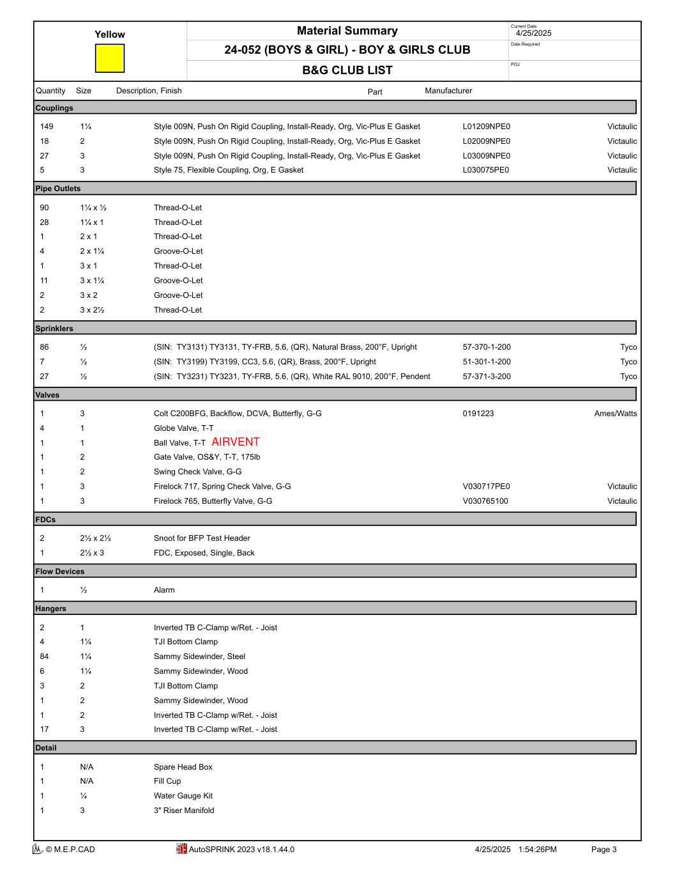
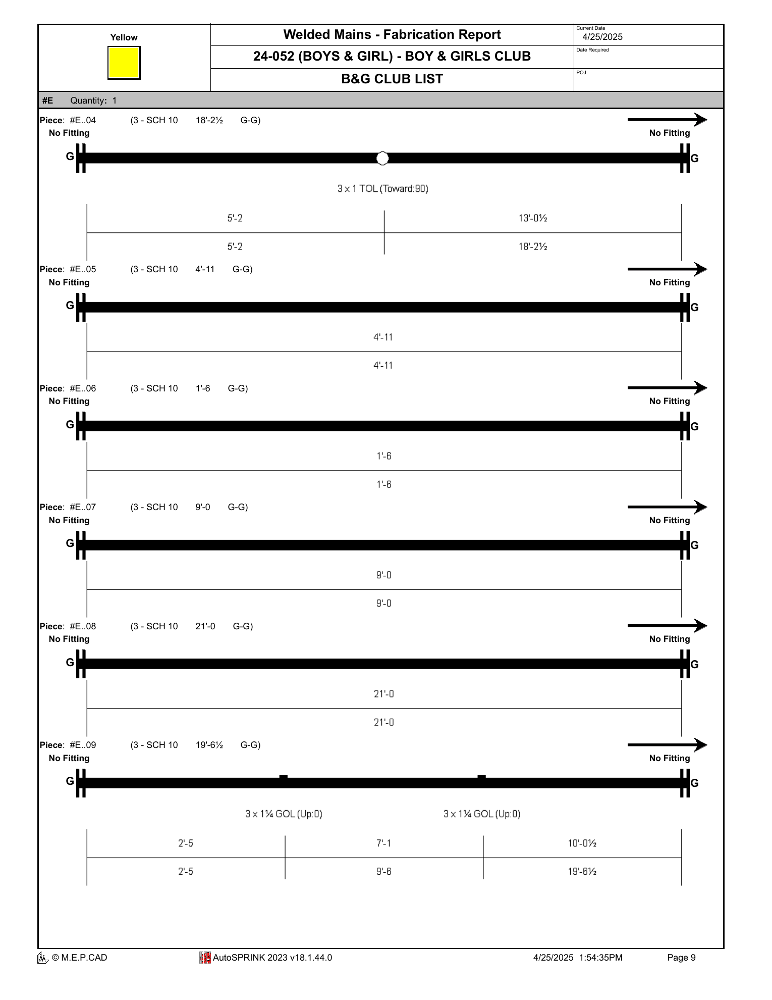
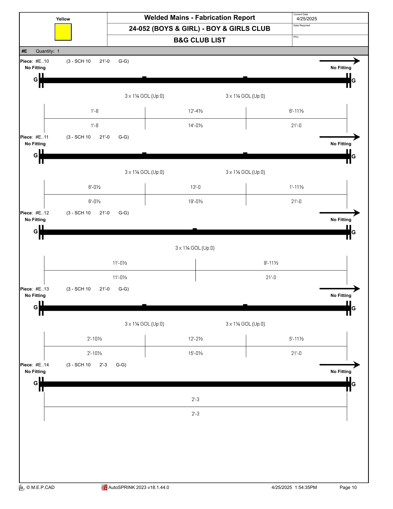
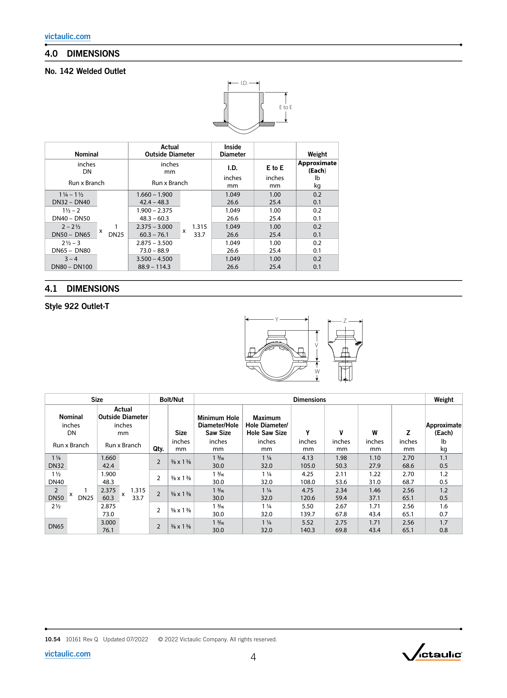
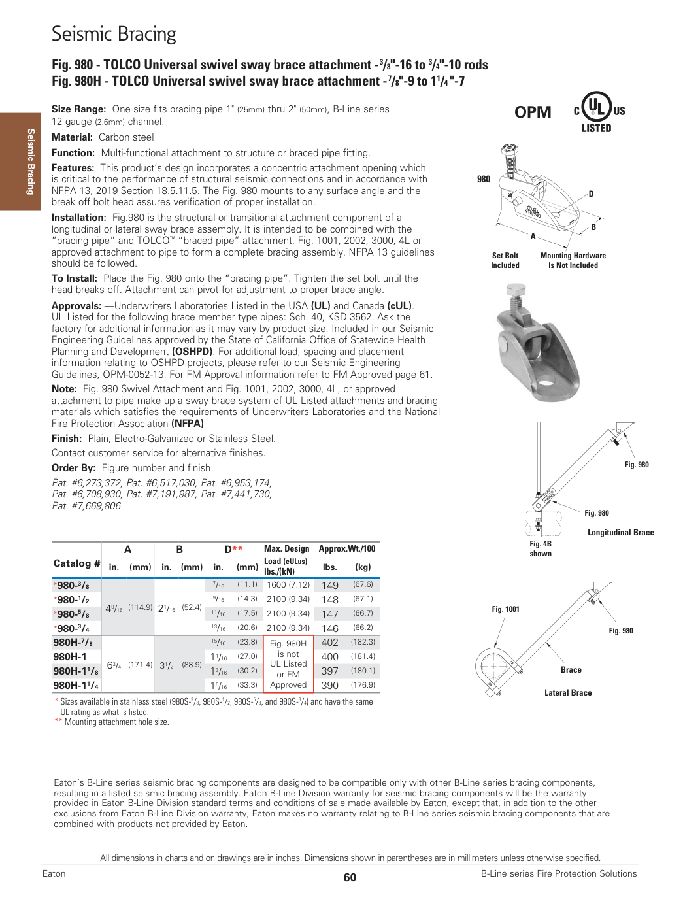
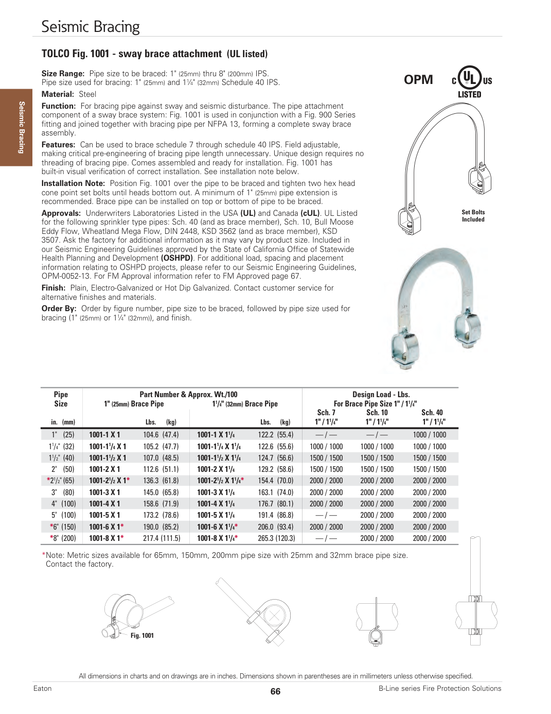
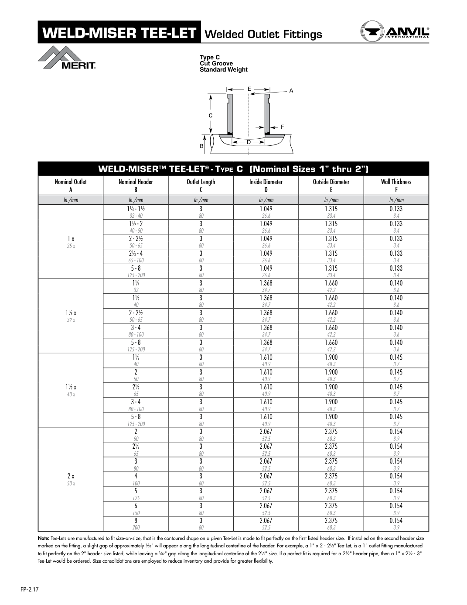
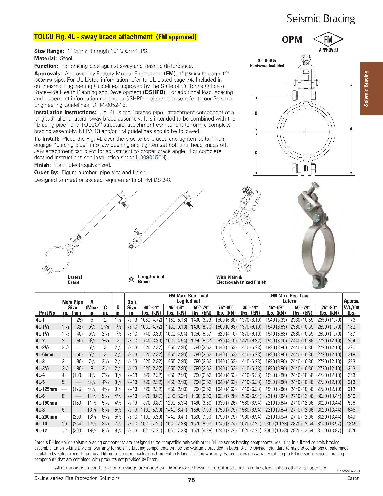
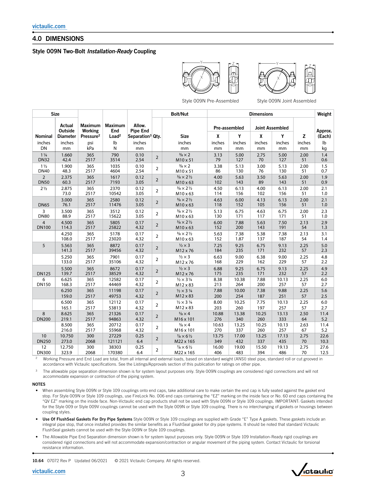
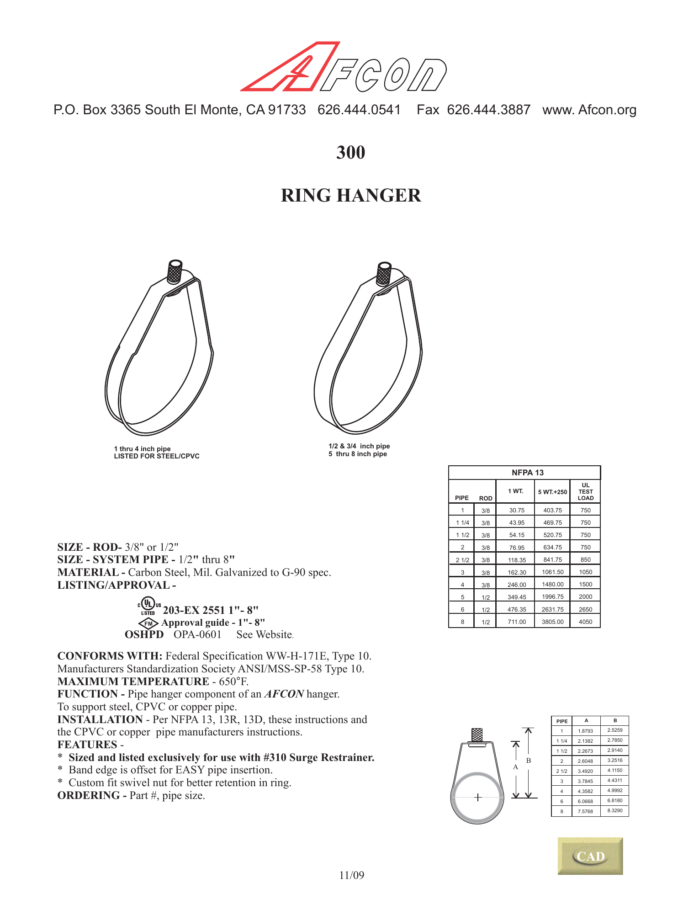

BGC exact catalog identities, without fake solids
These are direct renders of the BGC listing and manufacturer catalogs. The gate accepts only identities and project inventory selections the sources close, while rejecting unsupported installed-position, body-solid, thread, tolerance, and mating-fit claims.
32 / 32 adversarial mutations rejected
Actual BGC material summary — page 3
This project source selects 27 three-inch Victaulic Style 009N couplings (L03009NPE0), five three-inch Style 75 couplings (L030075PE0), and eleven 3 × 1¼ Groove-O-Let outlets. It does not identify which coupling style is installed at each gym piece boundary, nor an outlet manufacturer.

Actual welded-main listing — page 9
Piece #E.09 is 3-inch Schedule 10 with two 3 × 1¼ GOL (Up:0) outlets. This is the actual source behind the registered gym junctions.

Actual welded-main listing — page 10
Pieces #E.10–#E.13 retain the same 3 × 1¼ grooved-outlet identity and exact shop stations.

Auto-reject: Victaulic No. 142 is the wrong size
The official No. 142 table is for a 1-inch nominal branch (1.315-inch actual OD). BGC requires 1¼-inch nominal (1.660-inch actual OD). Its downloaded DWG remains a hash-sealed negative control, never installed geometry.
| Candidate | Branch nominal | Actual OD | Decision |
|---|
| Victaulic No. 142 | 1 in | 1.315 in | Rejected |
| BGC #E gym outlet | 1¼ in | 1.660 in | Manufacturer selection still required |

TOLCO 980-3/8 identity is closed
The BGC BOM names code 13520712 and the 3/8-inch Fig. 980 variant. Eaton maps it to 980-3/8: A = 4 9/16 inches, B = 2 1/16 inches, mounting hole D = 7/16 inch. The catalog lacks enough manufacturing dimensions for an exact body solid.

TOLCO 1001-2 × 1 identity is closed
The BGC design row binds a 2-inch braced pipe to 1-inch Schedule 40 brace pipe and released code Y379010020. Eaton maps that pair to 1001-2 X 1, approximate weight 112.6 lb/100. Complete strap, saddle, fastener, and tolerance geometry is not published.

Dimensioned 3 × 1¼ outlet candidates are explicit
The Halo standard Merit Type C cutsheet gives a 3-inch outlet length, 1.368-inch ID, 1.660-inch OD, 0.140-inch wall, and a contour made to fit the first-listed 3-inch header. The official SCI catalog separately identifies 61CG1012030 / product 4360000040. Neither proves what BGC purchased, and neither supplies a complete cut-groove manufacturing profile here, so neither becomes installed BGC geometry.

Fig. 4L remains an equivalent family
The released rows say Non-TOLCO Part for these installed equivalents. TOLCO geometry is therefore not promoted as the actual bracket.

Coupling inventory is selected; positions are not
The material summary selects 009N and Style 75 quantities and part numbers. The gym piece boundaries show only grooved ends, so the gate rejects assigning either style to a specific joint until native fabrication or installed-position evidence closes it.

Official 3D coupling CAD fails the production-solid gate
The exact three-inch blocks were resolved from Victaulic’s official AutoCAD library, hash-sealed, cross-converted to R2010, and topology-audited in FreeCAD. Identity recovery succeeded; production geometry did not.
| Exact block | Shells | Closed | Solids | Decision |
|---|
Coupling_3 (80)_009-N | 10 | 0 | 0 | Rejected |
Coupling-Flex_3 (80)_75 | 8 | 2 | 0 | Rejected |
Open housing shells and detached face failures cannot be exported as exact STEP/FreeCAD parts. Thread standard, thread engagement, groove seat, interference, clearance, and watertight mating remain false.
Approved AFCON hanger family is not an installed mapping
The approved packet publishes the 3-inch Fig. 300 A/B dimensions. Native project hanger records do not identify AFCON, so this remains candidate-family evidence only.

Current boundary: BGC catalog variants, project-wide coupling inventory, exact-dimension outlet candidates, and wrong-part rejection are green. Outlet manufacturer, joint-by-joint coupling mapping, complete solids, groove/thread profiles, fasteners, tolerances, engagement, mating fit, installed placement, fabrication release, field release, and VPS release remain fail-closed.
Open the BGC plan + section + PDF-underlaid 3D registration proof